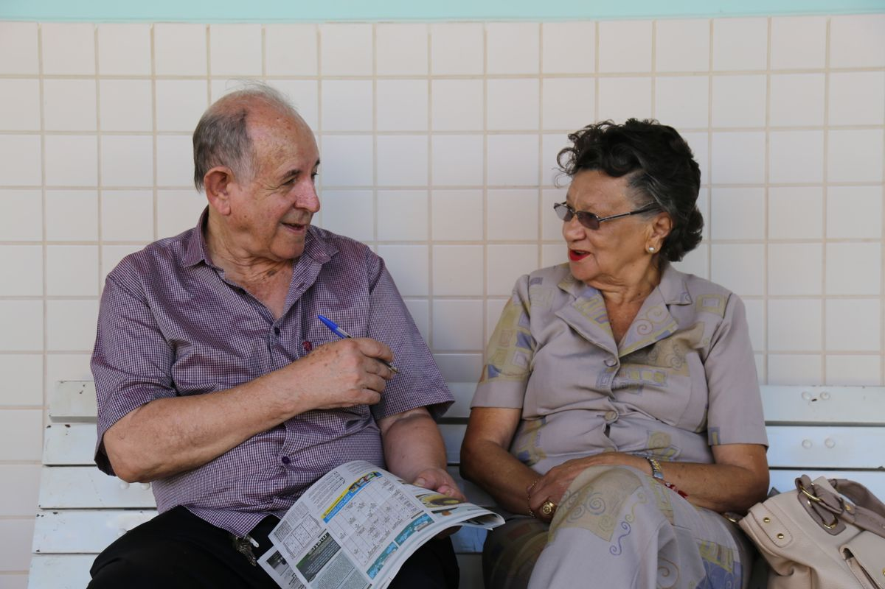

BPC/LOAS negado pelo INSS: como recorrer

O BPC — Benefício de Prestação Continuada, também chamado de LOAS — paga um salário mínimo por mês à pessoa idosa a partir de 65 anos ou à pessoa com deficiência de qualquer idade que viva em situação de baixa renda. Não exige nenhuma contribuição ao INSS. Justamente por isso, é um dos benefícios com maior índice de indeferimento — e também um dos que mais se recupera com trabalho técnico.
Praticamente todas as negativas se concentram em dois pontos: renda e reconhecimento da deficiência. Vamos aos dois, porque em ambos existe margem real de discussão.
Negativa por renda: a conta que o INSS faz
A regra geral exige renda familiar por pessoa inferior a 1/4 do salário mínimo. Mas essa não é a única régua possível, e é aqui que muitos pedidos são reconstruídos:
- Ampliação até 1/2 salário mínimo por pessoa — a lei autoriza elevar o limite quando há gastos comprovados decorrentes da deficiência ou da idade avançada: medicamento, fralda geriátrica, dieta especial, transporte para tratamento, cuidador, órtese, prótese, terapia;
- Exclusão de rendas da conta — o BPC já recebido por outro integrante da família não entra no cálculo, e a jurisprudência admite excluir também benefício de até um salário mínimo recebido por pessoa idosa do grupo;
- Composição correta do grupo familiar — a lei lista quem entra: requerente, cônjuge ou companheiro, pais, madrasta ou padrasto, irmãos solteiros, filhos e enteados solteiros e menores tutelados, desde que morem sob o mesmo teto. Filho casado que mora em outro endereço, sobrinho, tio ou neto que não se encaixe nessas categorias não deveriam compor a conta.
Um erro de declaração no CadÚnico — pessoa lançada como moradora quando já se mudou, renda informal superestimada, benefício que deveria ser excluído — é motivo suficiente para indeferimento por renda. E é corrigível.
Negativa por deficiência: a avaliação biopsicossocial
Para pessoa com deficiência, a avaliação não é apenas médica. É biopsicossocial, feita por perito médico e por assistente social, considerando:
- impedimento de natureza física, mental, intelectual ou sensorial;
- efeitos de longo prazo — pelo menos 2 anos;
- barreiras concretas: acesso, transporte, escola, trabalho, comunicação;
- grau de dependência de terceiros nas atividades da vida diária.
Não é preciso estar incapaz para o trabalho: o critério do BPC é diferente do critério dos benefícios por incapacidade. Uma pessoa com deficiência que consegue trabalhar pode, dependendo do caso, ter direito ao benefício — e quem recebia BPC e passa a trabalhar com carteira assinada pode requerer o auxílio-inclusão, correspondente a metade do valor do BPC, em vez de perder tudo.
Os requisitos formais que derrubam pedidos
- CadÚnico atualizado — inscrição obrigatória, atualizada em até 48 meses e, na prática, o mais recente possível. É o motivo mais banal e mais frequente de negativa e de suspensão;
- CPF regular de todos os integrantes do grupo familiar;
- Não acumulação — o BPC não se acumula com aposentadoria, pensão ou outro benefício previdenciário, salvo as exceções legais, como pensão especial de natureza indenizatória e remuneração de contrato de aprendizagem;
- Residência no Brasil e, para estrangeiros, situação regular conforme entendimento consolidado nos tribunais.
O que o BPC não dá
Vale saber antes de escolher entre BPC e um benefício previdenciário: o BPC não paga 13º salário, não deixa pensão por morte e não gera direito a outros benefícios da previdência, porque não decorre de contribuição. Em compensação, é o único caminho para quem nunca contribuiu ou perdeu a qualidade de segurado. Quem tem histórico contributivo deve comparar as duas rotas antes de requerer — veja como funciona a aposentadoria por incapacidade permanente.
Os dois caminhos depois da negativa
Recurso ao Conselho de Recursos da Previdência Social
Prazo de 30 dias da ciência da decisão. É o caminho indicado quando o problema é documental e resolvível: CadÚnico corrigido, grupo familiar reformulado, comprovantes de gastos com saúde apresentados, laudos complementados. Provido o recurso, preserva-se a data original do pedido — e com ela os atrasados.
Ação na Justiça Federal
Basta a negativa administrativa, sem necessidade de esgotar recursos. Na ação, além da perícia médica judicial, o juiz determina estudo social, com visita de assistente social à residência — instrumento que costuma mudar o resultado, porque descreve a realidade que a análise de dados do INSS não vê: casa, condições de higiene, alimentação, medicamentos, quem cuida de quem. Cabe também pedido de tutela de urgência.
Documentos que fazem diferença
- Comprovantes de todos os gastos de saúde: notas de farmácia, fraldas, dieta, consultas, exames, transporte para tratamento;
- Laudos médicos com CID, descrição funcional e prognóstico de longo prazo;
- Declaração escolar, relatório de terapeuta, fonoaudiólogo ou psicólogo, no caso de crianças e adolescentes;
- Comprovante de residência e de composição familiar real;
- Comprovantes de renda de cada integrante — inclusive a informalidade, declarada com honestidade;
- Extrato do CadÚnico e da decisão de indeferimento;
- Contas de água, luz e aluguel, que ajudam a demonstrar a realidade econômica.
Depois de concedido: atenção à revisão
O BPC é reavaliado periodicamente, em regra a cada dois anos, e depende de CadÚnico atualizado. Deixar a inscrição vencer, mudar de endereço sem atualizar ou ignorar convocação são causas comuns de suspensão de um benefício que estava regular. Se o seu foi suspenso ou cessado, o prazo de reação também é curto.
Advogado para BPC/LOAS em Vila Velha/ES
Boa parte das negativas de BPC não decorre de ausência de direito, e sim de como a renda foi declarada e de como a deficiência foi documentada. O trabalho consiste em ler a decisão de indeferimento para identificar o fundamento real, recompor o grupo familiar e a conta da renda per capita, reunir a prova dos gastos que a lei permite abater e escolher entre recurso administrativo e ação judicial.
Atendimento presencial no Centro de Vitória e integralmente online para quem está em Vila Velha, com documentos por WhatsApp e procuração assinada digitalmente.
Dúvidas frequentes sobre BPC/LOAS negado
Qual é o limite de renda para receber o BPC?
A regra geral é renda familiar por pessoa inferior a um quarto do salário mínimo. A lei permite ampliar esse limite até meio salário mínimo por pessoa quando há gastos comprovados com tratamento, medicamento, fralda, alimentação especial, cuidador ou órtese e prótese decorrentes da deficiência ou da idade avançada. Muitos indeferimentos por renda são revertidos justamente pela demonstração desses gastos.
Preciso ter contribuído para o INSS para receber o BPC?
Não. O BPC é um benefício assistencial, previsto na Lei Orgânica da Assistência Social, e não exige nenhuma contribuição. Em contrapartida, ele não gera décimo terceiro, não deixa pensão por morte e não pode ser acumulado com aposentadoria ou outro benefício da previdência, salvo as exceções previstas em lei.
Quem entra no cálculo da renda familiar?
O grupo familiar é formado pelo requerente, cônjuge ou companheiro, pais, madrasta ou padrasto, irmãos solteiros, filhos e enteados solteiros e menores tutelados, desde que vivam sob o mesmo teto. Parentes que moram em outro endereço não entram. O BPC já recebido por outro integrante da família é excluído da conta, e a jurisprudência admite excluir também benefício de um salário mínimo recebido por pessoa idosa do grupo.
O INSS disse que não há deficiência. O que fazer?
A avaliação do BPC é biopsicossocial: além da perícia médica, há avaliação social que considera barreiras, dependência de terceiros e impacto na vida diária, com efeitos de longo prazo, de pelo menos dois anos. Quando o INSS reconhece a doença mas nega a deficiência, o caminho é o recurso ao Conselho de Recursos, em 30 dias, ou a ação judicial, em que o juiz determina perícia médica e estudo social por assistente social.
Advogado para BPC/LOAS atendendo toda Vila Velha/ES
- Centro de Vila Velha
- Ibes
- Araçás
- Cobilândia
- Cobi de Baixo
- Cobi de Cima
- São Torquato
- Paul
- Argolas
- Ataíde
- Alvorada
- Santa Inês
- Vila Nova
- Terra Vermelha
- Barramares
- São Conrado
- Jabaeté
- Ulisses Guimarães
- João Goulart
- Morada do Sol
- Rio Marinho
- Santa Rita
- Aribiri
- Glória
- Divino Espírito Santo
- Vale Encantado
- Cocal
- Barra do Jucu

Alisson Brandão
Advogado · OAB/ES 27.871
Escritório no Centro de Vitória/ES, no Edifício Bemge. Atuação em Direito Previdenciário, do Consumidor e Cível em toda a Grande Vitória.
Seu BPC/LOAS foi negado ou suspenso? Envie a carta de indeferimento e os laudos para uma análise do que pode ser revertido.
Falar no WhatsAppContinue lendo
- Auxílio-doença negado na perícia do INSS: o que fazer
- Aposentadoria por invalidez: requisitos e cálculo
- INSS não analisou seu pedido: prazos e o que fazer
- Desconto associativo indevido no benefício do INSS
- Pensão por morte negada por falta de prova da união estável
- Advogado previdenciário em Vitória: todos os benefícios do INSS